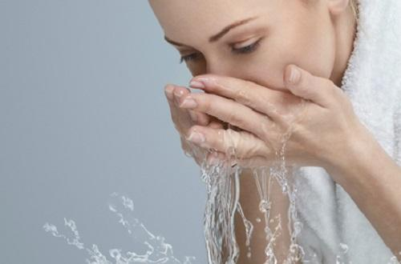

淘米水是生活中最为平凡的物质，我们每一天洗米之后都会把它倒掉，没有注意到 其实它的良好功效，其实洗米水是一种非常纯天然健康的美容圣品，直接用来洗脸效果 非常棒，美白淡斑，有效的祛痘控油，成为了很多女孩子的信赖保养方法，今天就一起 分享淘米水的各种好处吧！
洗米水洗脸的神奇美容功效：淘米水中溶解了淀粉、蛋白质等营养物质，能有效分解 面部肌肤对于的油脂，淡化色斑、清除污垢、抑制脂肪粒滋生。其中所含的维生素B、E 也可提高细胞代谢能力，帮助保持肌肤的滋润。长期坚持使用，会使肌肤变得光滑细腻， 富有弹性。
STEP1：淘米水搁置一旁，待水沉淀后取最上一层的水进行洗脸洗脸。
STEP2：为了让其美容效果最大化，用首先准备好的竹炭海绵沾取淘米水，以点拍的形式在脸部进行按摩，竹炭有吸附脏东西的能力，因此可以吸出皮肤深层的污垢。
STEP3：米水洗完脸后，这里还要用到一个神奇的美容护肤物品，就是玉米粒。它能助你解决很多肌肤问题。
STEP4：首先要把玉米粒压碎，取适量的玉米碎末放在化妆棉上敷于面部，待30分钟后，进行按摩。你会发现，玉米粒在脸上按摩的过程是非常神奇的，也很舒服。
STEP5：将所有的去污工作做好后，要对肌肤进行保湿护理。使用清爽型的爽肤水是最好不过的了。如果你是干性肌肤最好再涂抹精华液活乳液，皮肤立刻变的通透水润。
STEP6：如果你有很重的黑眼圈，也可以趁着这时做个眼部护理，简单的做个眼膜能缓解过于明显的黑眼圈。
据研究发现，淘米水里含有了一些大米中的淀粉，蛋白质和维生素，矿物质等成分，由于这些物质都是溶解于水中的可溶性营养成分，所以能被我们皮肤较好的吸收。长期使用淘米水洗脸，可以达到淡化黑色素的目的，所以脸色比较黑的朋友，可以尝试用淘米水洗脸使脸部白皙起来。而且淘米水能洗掉脸部的油污和去除脂肪粒，可以达到一定的去油效果哦。
淘米水里面还含有许多可溶性维生素和矿物质，这些物质能滋养我们的脸部皮肤，使皮肤更加年轻，有活力。我们可以将淘米水敷在脸上，然后按摩20分钟，长期坚持，就可以达到比敷面膜还有效的嫩肤功效。而且据研究发现，淘米水还有很好的去痘印的效果。用淘米水长期洗脸，可以促进脸部皮肤的新陈代谢，从而使痘印慢慢脱落，新的皮肤也会慢慢长出哦。
用淘米水洗脸的时候一定不要用第一次淘米的水哦，这种淘米水虽然含有的营养元素比第二次多，但是也富含大量的杂质，用它洗脸很容易造成我们脸部皮肤的感染和过敏。还有用淘米水洗脸时，一定要等水静置以后取上层的清水哦，因为下层一般都是淀粉的沉积物，敷在我们脸上没有任何好处，还会阻止我们脸部皮肤对营养物质的吸收。淘米水洗完脸后也要用清水将脸洗净，不然脸上细菌容易滋生，使我们患上脸部皮肤病。
淘米水含有一定的蛋白质、维生素和微量元素，特别是头一两次淘米水含有钾，淘米水会呈现PH值 为5.5左右的弱酸性，加入食盐入药后，具有清火、凉血、解毒的功效。
研究发现，洗米水里含有蛋白质、淀粉、矿物质等养分，可以用来洗脸、润肤，煮后饮用，对 保护胃壁黏膜、消除积食和改善消化不良有帮助。中医也尝试以洗米水炒炙中药，作为调养脾胃的药方。
用淘米水加食盐煮开后，外洗或外擦皮肤，对皮肤有比较温和的清洁作用，而且可以保持皮肤表面正 常的酸碱度，抑制病原微生物的生长，防止皮肤搔痒。
另外，头一两道淘米水会呈现PH值为5.5左右的弱酸性，洗过两次后，PH值约为7.2左右，这种呈 弱碱性的淘米水很适合清洗物品，可以代替肥皂水洗掉皮脂，而且与一般的工业洗衣粉相比，它的洗 净力适中，质地温和，没有副作用。
1、用淘米水洗手，不仅能去污，还可使皮肤滋润光滑。
2、用淘米水刷洗碗碟，不仅去污力强，还不含化学物质，胜过洗洁剂。
3、新沙锅在使用前，先用淘米水刷洗几遍，再装上米汤在火上烧半小时。经过这样的处理，沙锅就不会漏水了。
4、案板用久了，会产生一股腥臭味。可放入淘米水中浸泡一段时间，再用盐擦洗，腥臭味即可消除。
5、菜刀、锅铲、铁勺等铁制炊具，浸入比较浓的淘米水中，可以防止生锈。如果已经生锈，可先在水中浸泡数小时，这样容易擦去锈斑。
6、带有腥味的菜，放入加盐的淘米水中搓洗，再用清水冲净，可去除腥味。
7、从市场上买回的肉，有时会沾上灰土，用自来水很难洗净，如果用热淘米水洗两遍，脏物很容易清除。
8、刚油漆好的家具，有一股难闻的油漆味，用软布蘸淘米水反复擦拭，可除掉油漆味。
9、白色衣服在淘米水中浸泡10分钟后，再用肥皂清洗，能使衣服洁白一新。
10、毛巾如果沾上了水果汁、汗渍等，会有异味，并且变硬。把它浸泡在淘米水中蒸煮十几分钟，就会变得又白又软。